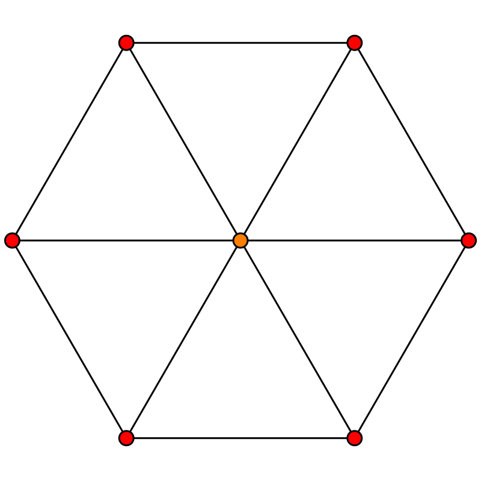
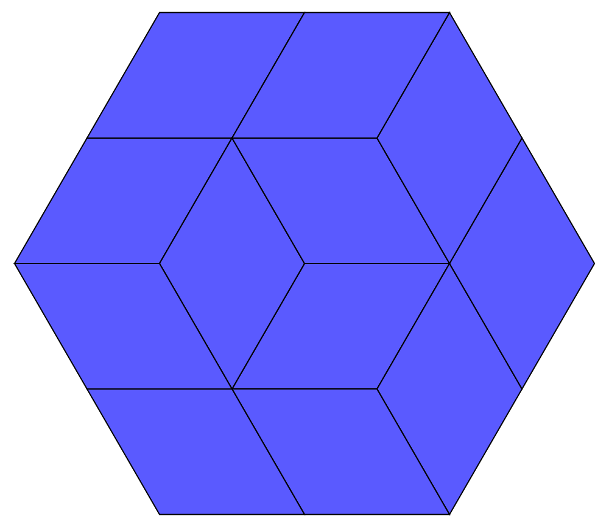
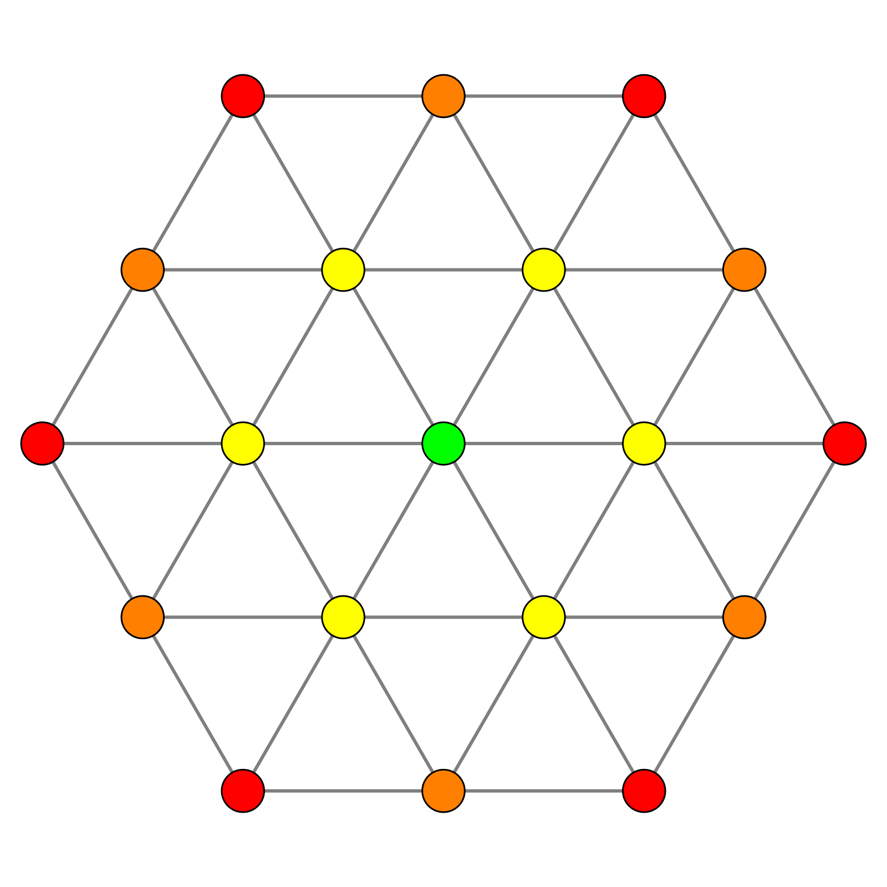
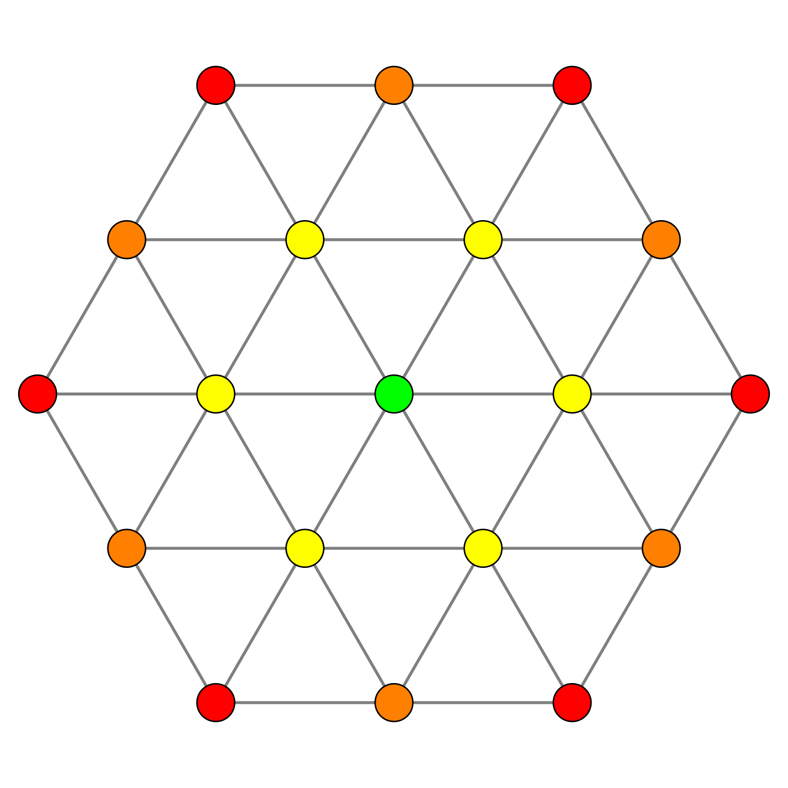
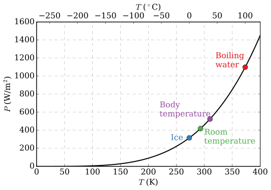

The Solar Flower & Hive Engine
The following exposition documents plans for a novel invention involving a low-cost solar concentrator as well as a heat engine comprised of arrays of modified stirling engine units.
Part 1 of Erik's video:
So right off the bat I, as well as many others who expressed as much in the comment section of that video, realised that flat mirrors could be used quite effectively within this setup, especially since he isn't focusing the light on a tiny spot to begin with. Which would then enable one to produce them by scoring regular store bought mirrors. This would be a cheaper and less laborious procedure instead of the convoluted method he used to produce dubiously parabolic mirrors.
Part 2 of Erik's video:
The hexagonal mirrors could be further subdivided into triangles or parallelograms if they needed to be more densely concentrated. And these shapes would be easier to score and break off of the larger mirrors as well.
 
 

To secure the mirror pieces in place; it might be easier, and thus ultimately more scalable, to use some form of a metal harness that clips onto the glass and in turn connects to the adjustment screws if those are used, or to the frame directly; this rather than having to drill directly through the glass of the mirror pieces. The harness could perhaps be formed through sheet metal forming techniques.
This is where the benefits of a subdivided, modular approach comes to fore; by having the mirrors be small and plentiful, each mirror can then be held by a thinner metal harness, which subsequently enables forming them with even an inferior press. There are however then many times more individual components to make, so it also begs to automate as much of the process as possible.
There exists an open hardware spring coiler on the web, which is available to build if the price of springs en masse is considered to be a problem. These springs can then be used together with bolts as in Erik's setup, or with some other adjustable mechanism. I would much rather use good ol' fashion metal springs in ongoing production than having to continiously fill the world with more plastic waste in the form of those plastic springs, which also seem like they would wear out quite quickly.
While true that the spring coiling machine itself may have to be printed from plastic, at least you only have to print it once and from then on it will, hopefully, produce many many metal springs for your further manufacturing requirements.
I do find it doubtful however that any intricate adjustment mechanisms would actually be necessary at all. That idea came along from the James Webb Space Telescope, for which these were vital in aligning and focusing the telescope's mirrors, after having folded out during deployment to space, to within a few nanometers-precision for optimal performance.
The James Web Space Telescope however was a multi-billion dollar project spanning decades. A simple solar concentrator at home for the purpose of heating a pot of water should not require such accuracy, if connected to a well manufactured and assembled frame. The frame should provide the accuracy. The frame could for example be made from flat shapes of steel or wood, manufactured through laser cutting or milling, and designed in such a fashion as to connect together in a single correct way in order to form the 3D shape, similar to some wooden puzzle toys.

A wholly parallel construction:

Such a frame should ideally be able to be connected together, with nuts and bolts for example, without the need for calibration or adjustment. If calibration at the assembly joints is however deemed neccessary after construction, that may then be performed in some manner, and the joints then subsequently welded or epoxied stiffly into place.
So up to this point we have been busy envisioning novel and affordable ways to manufacture solar concentrators at home with minimal machining.
That's all well and good. But is that the best we can do? I mean were not exactly shaking up the game here! Solar concentrators utilising parabolic mirrors, and compound mirror systems, have been around for a long time; used mostly as outdoor solar cookers. And those haven't really done that much to change our world or our daily lives. Most people have never even heard of them let alone seen one in person. And why is that? They seems so promising. Are they? Well, let us investigate and consider.
First, let's take a look at what has been done before to see if we can assess their limitations, and spot any potential improvements or novel applications.
Discarded old satellite TV dishes, which are also parabolic concentrators of a sort, have sometimes been used as solar cookers by covering them with a metallic surface in order to get them to reflect a larger spectrum of lightwaves and consequently function as cookers. However I don't consider scavanging for discarded TV dishes to be a sustainable manufacturing model.
Another method of solar heating utilises a double walled glass tube with a vacuum in-between the two walls, which then insulates the incoming heat from escaping outwards again, similar to how a thermos flask works. This is the functioning mechanism utilised by a lot of modern solar water heaters as well.
Here is an interesting Afghan production process that also utilises many small mirrors, although these aren't meticulously calibrated or laid and so I doubt that they are as hyper-focused as they could possibly be with some further engineering.
Another interesting version of a solar oven is this windowed box which, like the glass tubes, doesn't concentrate sun rays at all but simply insulates the incoming heat.
As previously mentioned, discarded satellite dishes can be used to this effect since they are parabolic in shape. There is quite a lot of scraping and polishing that has to happen before it can be coated with a reflective material though, using then a selected method such as metallic paint or strips.
I wonder if a new method of making a high quality parabolic shape could be achieved through 3D printing? By 3D printing the dish shape in multiple parts like a sliced pizza, or even further subdivided, in order to ultimately create a larger combined piece. The pieces could possibly be reliably held together in exact place with rods, joints and clip-ins, before being permanently glued or epoxied together to form the stiff combined piece.
Vapor smoothing may help to give the final piece a smooth surface finish which can then be coated with a reflective surface, using a selected method, such as electroplating.
However such a process would still use printed plastic for every unit, and filling the world with more plastic is something I would like to avoid taking a part in. So I would much rather use 3D printed plastic only when necessary, and preferrably only in intermediary production steps such as for molds, for example, or intermediate machinery if necessary; not in the final product to be used or sold.
To avoid this one could attempt to use the above steps to make the inverse form of the parabolic dish as a mold, but the question then moves on to what substance to cast it with and how to polish the resulting casting.
Assuming that it may be possible though, with a little ingenuity, to fabricate some kind of low-cost and yet effective solar concentrator, how significant would that really be? After all, as I have pointed out; these kinds of mechanisms have been around for a while and haven't really caught on much, either in the west or elsewhere, outside of a few enthusiasts circles such as outdoor campers or environmental advocates.
And why is that the case? Are people simply ignorant as to the true awesomeness of these devices and of the sun? Well to put it mildly, solar cookers frigging suck! Okay I'll tone it down; they have a lot of problems. And there are certainly reasons for them not being very popular.
A comprehensive overview of solar cooking models:
Taking an honest assessment of their shortcomings, the situation becomes clearer.
First off, they can only really do one thing well, which is to cook a pot of water or stew. Not that versatile! And there are far more convenient ways to do that! After all solar cookers have to be set up in the direct sunlight, obviously, which then makes standing next to them to cook on a scorching hot day a somewhat less than pleasant prospect.
Cooking with fire, though fire is warm itself, can at least be accomplished in the shade.
And then in the winter, while the solar concentrator may still actually function, it might be even more of an unpleasant prospect to have to cook outdoors.
Furthermore, those of you who pay close attention may have noticed a tendency for people to wear sunglasses around them... and there's a reason for that. If you haven't been playing around with a magnifying glass in the sun lately, I'll tell you that concentrating light towards a singular point can create a literally blinding spot of brightness, the visage of which one can almost feel melting away at your retina. This puts a whole new spin on the proverb that "it is better to fill a mans belly than his eye".
And then there's the whole problem of, I dunno, an incinerating spot of condensed solar radiation dangling invisibly in mid air. Putting aside for a moment the sci-fi awesomeness of that, it doesn't seem like the kind cooking equipment that you would want children playing around for example. Somebody's bound to get hurt eventually. Lightsabers are cool and all but you wouldn't leave a functioning one lying around unattended with the safety off, would you? You don't have to answer that.
And aside from all that, this being such a direct method of harnessing the sun's rays means that you are beholden to every cloud that decides to whisk past between you and the sun. The true epitome of renewable energy's intermittency.
Even using it, as Erik de Poorter did in his video, as a water heater for heating large volumes of water, faces issues, as I believe he points out in his video. Usually, heating water using the sun is handled differently, with stationary evacuated tubes for precisely that reason; them being stationary and passive. A continually moving focal point, as is the case when using solar concentrators, means that you necessarily have to at some point employ some kind of flexible plastic tubing in order to accomodate the movement and continuously feed water towards the focal spot. Running hot water through plastic tubes exposed to direct sunlight is not generally recommended for prima water quality. Microplastics would be continually seeping off into the water, making it unfit for consumption.
Otherwise it would be much simpler and cheaper to just run some black plastic pipes in direct sunlight on a hot pavement or roof, as that suffers from the same pollutive drawback.
As a quick side note, one actually shouldn't ideally consume hot water from an electrical water heater either as they often contain accumulated debris from a corroded anode inside them, making them littered with rust particles.
So, now...
Is there any other way in which we could utilise this extraordinary solar effect? Is there some arrangement that could expand upon it's usefullness?
Specifically, could we harness this effect in such a way as make it possible to erect arrays of these devices which follow the sun for the whole day and then store that energy in order to do something useful?
So thinking about it, heating, in and of itself, is immensely useful. In fact around half of all household electricity usage goes towards heating in some form, and the same is also true of industrial energy usage. This starts to make sense when you appreciate that heating, as anyone who has had to pay electricity bills would surely know first-hand, is a very power thirsty procedure.
Have you ever then, keeping that fact in mind, contemplated standing on a scorching hot pavement during the summertime, feet burning; whilst considering that a few months later the same pavement would be freezing cold to the touch. Miles and miles of that all around. Knowing then that that is the result of a massive amount of energy entering the system during the summertime and exiting out again during the winter season.
It makes one wonder if there could be some way in which you could just suck that energy out of there!
Well heat is difficult to capture in such a manner, as it always tends to dissipate rather than to compound towards a single space.
But once you do have a heated material, there is one thing you can do with it other than to use it immediately to heat something else. And that is to just put it away until later when it might be needed for that same purpose.
This may have been difficult to accomplish in the olden days, when you simply had an iron pot and some embers, but due to massive advances in our understanding of thermal insulation properties; it has become a viable option.
This is the concept of a heat battery or thermal battery; which is not a new one.
You could even argue that many old stone buildings are such, in that they are often built and oriented in such a way as to heat up during the day and thus to keep warm into the night. Stones placed by a fireside have the same effect. Modern implementations of this idea also exist and there are in fact several companies, using wildly different approaches, who have offerings available on the market; though these tend to be expensive, industry-scale installations, rather than destined for domestic use.
An electric water heater is a kind of heat battery as well in that it can store heated water for many hours after the heating elements have been switched off, in an insulated tank. So anything that aims to preserve heat is really technically in some way a heat battery. But of course not all materials and mechanisms are equal in this regard.
Now, to expand upon our solar concentrator, how about instead of having it heat up water, rather it heats up ceramic or metallic balls, or spheres if you prefer.
When these have cooked in the solar spot and have reached their determined temperature, they drop down to roll along a track and into an insulated chamber, where that heat is then stored to be used at a later time. Thus a heat battery.
More than one insulated chamber might be useful during this process, such as a smaller intermediary chamber, a 'nest', situated close by to the solar concentrator, so that the spheres don't have to go far before gaining initual insulative protection. And this chamber then when it has collected a determined amount of hot spheres, itself is further whisked off towards a larger and better insulated storage unit designed for long-term storage, perhaps inside of a building, where the spheres are subsequently deposited into. These thermal spheres can be stored up throughout the day, using multiple solar concentrators, to be used later for heating tasks such as heating water or air, and perhaps for use with a specially designed oven or stove.
The point of this whole exercise wouldn't be to necessarily try and keep the spheres warm for more than a single day or two, which would prove to be increasingly difficult. But more to create a system where they are continually rotated and stored, to be used when needed within that timeframe, and where it is assumed that most days will have a few hours of sunshine available in them.
So the overall effectiveness of this system will certainly vary based on local weather tendencies, specifically with regards to cloud formations.
I'll list a bunch of informative videos concerning different current approaches to heat battery designs, before continuing on with my own plans.
This one takes a ceramic approach:
Initually my idea, as I have talked about it thus far, was to use spheres for the heating elements. Ceramic or metal spheres, or ceramic spheres infused with metal grids to help facilitate faster heat transfer into the ceramic.
The metal grids that I mentioned could be made by hand quite easily, but automating the process may prove more difficult. Copper wires could be used as it is not that expensive as a metal, carries heat well and doesn't oxidise to the same degree as many iron containing metal alloys.
The different thermal expansion rates between the ceramic material and the inserted metal grid should be considered though, as that may eventually lead to cracking and breaking.
Ceramic is just fired clay, which is just dirt (sort of).
As an alternative material; stone spheres can be made with simple equipment:
Casting concrete instead of firing ceramic is another viable option and perhaps the easiest one to get started with.
Now, let's stop for a moment and consider what the most basic, primitive implementation of this mechanism could be. Version 1.0.
This will help to assess what costs should be considered in order to achieve any useful- or promising- results. It may also serve to give some indication as to the potential scalability of such a device, as part of arrays or otherwise.
So as I see it the most basic, *ahem* cheapest, implementation of this setup, is to have one solar concentrator set up to heat up ceramic or concrete balls which rotate in the solar focal spot. Once one has spun there for a sufficient amount of time, or more ideally it's temperature continually measured and used as a trigger, it then drops down onto a track that runs towards a makeshift oven, where they are deposited into. The oven could perhaps be as little as a cube brick-laid enclosure with a hole in it for the spheres to enter in, and another for them to exit.
The track could possibly be as simple as some wire marble runs:
The spheres are then eventually rotated through and out of the oven, across the rest of the track system, and make their way back, at last, to the focal point.
This was deliberately to think of the very simplest of setups; it doesn't even incorporate any insulated storage, which would be the next obvious upgrade, just quite direct use of the heat. So it's basically just a solar cooker with extra steps.
Also, we will simply leave aside for now the question of what sets and moves the orientation of the parabolic dishes throughout the procedure and just assume it to be a manual adjustment. I do have more to say on this later on.
A stove-top version could perhaps be substituted for the oven by making the brick chamber quite small, and by putting a flat metal plate directly on the top of the construction as the roof.
So let us assess then if anything has been gained so far beyond what would have been achieved by simply heating a pot directly on the focal point, as is usually done.
I would say so. Because by divorcing the 'charging area', which is where the solar concentrator heats up the material in the sunlight, from the 'usage area', which is whatever heating appliance you ultimately decide to use it for; several benefits have been gained.
First off, because of the very principle by which they function, solar concentrators have to stand directly in the sunlight, and that just sort of then excludes any daily civilised usage. Nobody likes to work in the sun; whether baking, cooking or otherwise. So then by enabling one to work at a distance from the solar device, you gain the immense convenience of being able to work in the shade.
Other than that you don't have to blind yourself everytime you go to stir the pot.
Seriouly, for those who haven't been playing with magnifying glasses recently, you can almost certainly blind yourself just by looking at a spot of concentrated sunlight for just too long.
Though extra features should still be incorporated onto the solar concentrator in attempt to effectively minimise or nullify light spill-off.
And then in a similar way you also remove the dangerous sun-spot from your working vicinity; which could seriously injure someone and would be prone to accidents since it's invisible.
When an insulated storage unit is then incorporated, one gains the benefit of longevity. So that the sun then doesn't have to be immediately present and shining every single time you want to use a heating appliance. The storage buffers the intermittency problem of being beholden to every passing cloud.
A further upgrade might be achieved by insulating the heated orb within a thin 'shell' immediately after it leaves the solar charging spot. This would be done in order to minimise the heat losses that the sphere would otherwise undergo to the air rushing by against it. The sphere would roll down inside of the enclosed shell towards the first depot, where the shell would subsequently be disengaged and the orb deposited into.
The interior of the protective shell, which would come into direct contact with the heated orb, may need to be studded in order to minimise heat loss into the shell itself.
Designing and fabricating such a mechanism might be a challenge.
I'll simply list as inspiration the following video showing the assembly of a plastic toy eggshell.
As well as this video that shows tiny pottery being made inside of an affordable microwave kiln. The replicability of such an intricate ceramic part as we would require, might necessitate either an elaborate molding process or some new micro ceramic 3D printing method.
Whatever material is eventually used to fabricate such a shell, would need to be able to withstand the constant thermal shock cycles as well as the physical traversal on the tracks that it would continually need to undergo.
Moving on from the idea of a shell for now. Let's consider the insulating storage chambers. The king of thermal insulation is undoubtedly the Dewar flask, more commonly known in it's implementation as the Thermos.
This guy did some efficiency tests on different Stanley brand flasks, and most importantly was kind enough to list the results right in the comment section of that video (albeit in Fahrenheit).
According to this guy, lab-grade Dewar containers that were made to hold liquid nitrogen, function on a whole other level of effectiveness as compared to the commercial camping mug varieties.
This difference in quality could perhaps be due to a cleaner vacuum which was created using stronger vacuum pump equipment. None of them have true vacuums, as that would perhaps be impossible to manufacture on earth.
The manufacturing process of a commercial vacuum flask is kindly walked through by several Sun Glory Group videos.
There are quite a lot of their videos online showcasing all of the different machines and the steps involved in the processes, in quite some detail.
There is also this gorgeously-filmed factory production series by Rang Dong in 4 episodes. As well as other factory processes on their YouTube channel.
So while it's not magic to produce a vacuum flask and the processes involved are quite well understood, it would seem though that in order to produce a half decent vacuum flask, several expensive machines are required.
Notably a powerful vacuum pump together with a good one-way valve, an automatic (track driven) thin sheet welder, silver plating equipment, and much more.
This goes somewhat counter, however, to the original thrust of this article, which was to explore cheap backyard-made equipment which could be used to harness the sun's energy. After all what's the use of breaking up cheap mirrors to build the solar concentrators, only to later have to buy thousands of dollars of equipment in order to produce the vacuums needed for the system to even function?
My initual idea was to heat up ceramic balls to between 400°C and 600°C and to just store those. But the problem becomes that as materials get hotter, they tend to give off heat at an accelerated rate, thus quickly necessitating heavily-engineered insulative storage mechanisms.

Power emitted by a black body plotted against the temperature according to the Stefan–Boltzmann law.
[Wiki]
So with this in mind it may be better to use larger ceramic spheres that are heated to a less extreme temperature, say 200°C, and kept using more affordable insulation materials such as fibreglass.
Really there are a lot of options regarding various aspects of such a device, and different configurations may prove better suited towards different use cases. Experimentation and real-world usage should serve to refine the designs. For now I am mostly interested in spit-balling a lot of ideas regarding different aspects of these machines, and throwing them up against a wall in the hope that something sticks.
At the end of the day, I would say that storing heat AS heat, by using some material as a vessel, makes sense to me. After all, our everyday methods to convert electrical energy into heat and vice-versa, tend to be very wasteful in terms of energy loss into the system during the conversion.
Having glowing hot balls that roll into your house from a collector and then travel through tubes in your walls may seem an amusing science fiction sketch idea, but I'd challenge anyone to come up with a greener solution to our current energy problems.
Copyright © 2026 sand.script.s